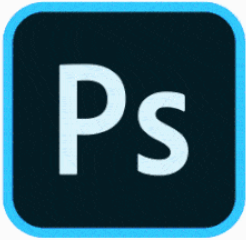

Windows-全部软件[9]

HBulider X- 2.6
一款支持HTML5的web开发IDE - 16.2MB
150.1K
>=10.12
01-12
CPU-Z（X64）- 1.92.2
最权威的处理器识别工具 - 9.1MB
150.1K
>=10.12
01-12

PhotoShop- 2021
开发和发行的图像处理软件 - 197.0MB
593.8K
>=10.12
07-25

After Effect- 2021
一款灵活的2D 3D合成软件 - 146.6MB
3160
>=10.13
05-14

WPS Office- 11.1.0.10938
金山推出的一款国产办公软件 - 193.4MB
9857
>=11.0
05-14

360解压- 1.4.1
免费解压软件，快速 轻巧 兼容性好 - 54.0MB
3352
>=10.12
05-13

格式工程- 12.4.1
支持各种类型文件格式转换 - 16.2MB
27.9K
>=10.12
05-13
AutoCAD- 2019
自动计算机辅助设计软件 - 450.2MB
16.6K
>=10.12
05-13
Visual Studio- 1.67
轻量但功能强大的源代码编辑器 - 450.2MB
4676
>=10.15
05-12